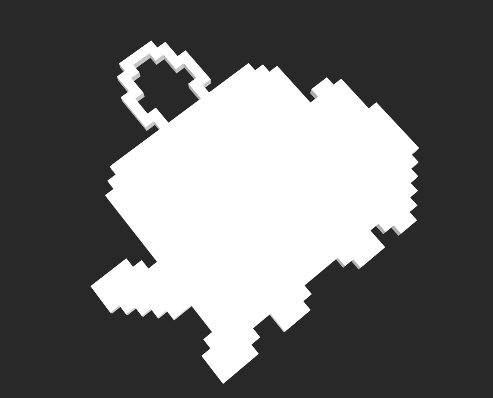
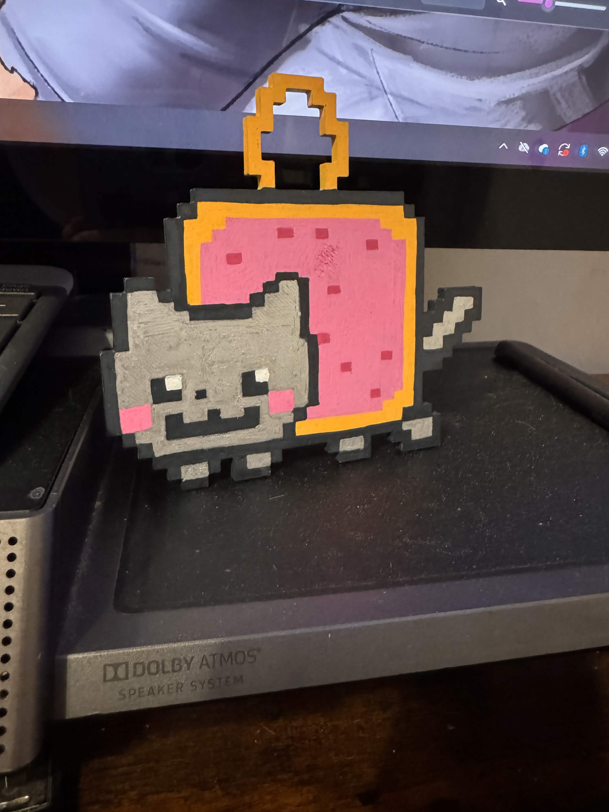

This was the minecraft build transfered into 3D model form as an STL file.

I printed the model using a 3D printer at my old college. My first draft was about 2 inches the long way and was overall very small, not big enough for much detail. Keeping that in mind my final draft came out to 5 inches to allow me to observe most of the detail and overall outline. I made a grid on the print and colored in the detail with acrylic markers.